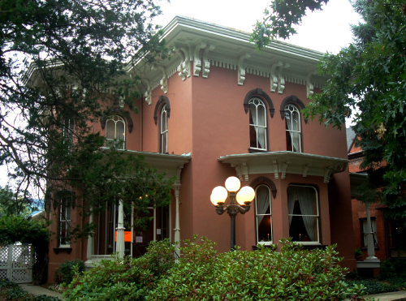
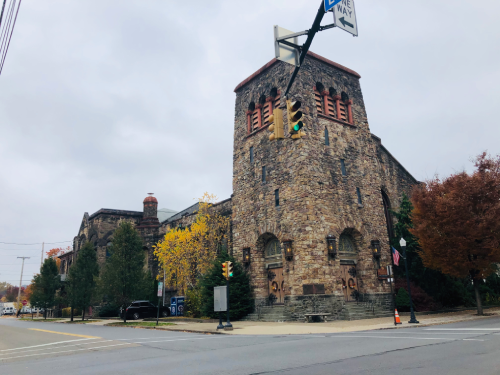
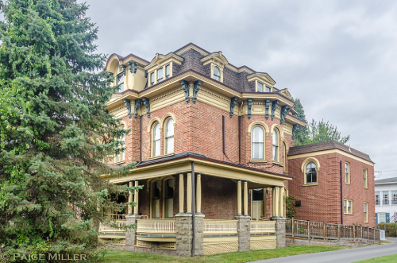
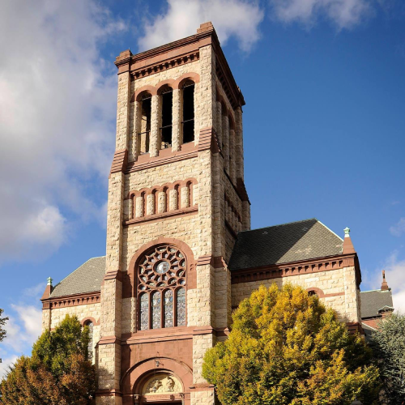

In a special street of williamsport there is a special row of houses here that we call the Millionaire Row, due to the houses/homes that were built during the 1800s are still thriving and living here
despite being very ol the houses still have their original materials and looks that they would have normally have during this time period.
There are 8 houses, an d2 Church es that are still from this time period, lets give a look at some of them and see what they look like and who owned them:
The Peter Herdic House
This house was built in 1854, this house was owned by one of the biggest lumber barrons, this house in 1984 went under one of the biggest restorations in the Row, and was also viewed as the top renovation
project of the year

First Baptist Church
This church was built in the mid 1860s, this church was constructed with mountain stone which is different from some of the houses that were made, but this showed off a different architecture type of a Romanesque style architecture,
with some lead glass windows as well

The Smith-Ulman House
This house was constructed in the mid 1870s, this house was made in a Victorian Second Empire Style house, with a Mansard Roof, arched doors, and even tall windows. One cool thing about this is that teh original carriage house, pretty much an old garage,
still stands behind it and is now a private clubhouse

St. Joseph the Worker Catholic Church
This church was constructed in the Mid 1886, compared to the First Baptist Church this church is made from rock and sandstone and also has no center coumns or anything in the middle, or any kind of steel structre for any kind of support,
this church is also much more bigger and can house 1,000 people
